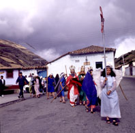
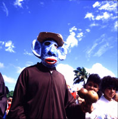

II. Regiones Musicales
Venezuela se puede dividir en nueve regiones musicales en todo su territorio, que por su contenido cultural, cada una produce música con marcadas diferencias a las otras regiones. Venezuela es un país grande conformado de una diversidad geográfica sorprendente: Contamos con extensos llanos, una zona montañosa de picos nevados como son los Andes. Selvas vírgenes impenetrables en Guayana, una larga costa de bellas playas, islas, un enorme río con su delta caudaloso, lagos gigantes, complejas urbes y hasta un desierto en . . . ¡Los Médanos de Coro! Las diferencias en el medio ambiente físico natural, aunado a las distintas mezclas de culturas que cada región contiene, desarrollaron un mapa de gran variedad musical en nuestro país, dividido por zonas más que por estados.
• Central
Aragua, Distrito Federal, Carabobo, Miranda
• Centro-Occidental
Falcón, Lara, Yaracuy
• Guayana
Amazonas, Bolívar, Delta Amacuro
• Los Andes
Mérida, Táchira, Trujillo
• Los Llanos
Apure, Barinas, Cojedes, Guárico, Portuguesa
• Nor-Oriental
Anzoátegui, Monagas, Nueva Esparta, Sucre
• Zuliana
Zulia
• Indígena Distribuída en diferentes estados
• Urbana Medianas a grandes ciudades del país
Vamos a conocer un poco la música que vive y suena en estas regiones, teniendo en cuenta que una festividad, la Navidad, se mantiene presente en casi todas ellas:

El Estado Lara con su
capital Barquisimeto, ha sido
siempre
llamada la “región musical de Venezuela,” donde los niños
nacen cantando y todos son músicos natos. Esta región,
con
su variedad de diferentes Cuatros, nos brinda la alegría del
Golpe
Larense.  En las festividades al santo patrón San Antonio en
junio,
se puede escuchar y bailar en todos los pueblos un conjunto de piezas o
“suite” del Tamunangue, así como salves, décimas y tonos
de velorio. En el Día de los Inocentes se festeja por las calles
con comparsas de los Saragozas.
En las festividades al santo patrón San Antonio en
junio,
se puede escuchar y bailar en todos los pueblos un conjunto de piezas o
“suite” del Tamunangue, así como salves, décimas y tonos
de velorio. En el Día de los Inocentes se festeja por las calles
con comparsas de los Saragozas. 
Para festejar la
cosecha del maíz,
en Falcón se celebra el Baile de las Turas de procedencia
indígena
con las flautas Turas y los Cachos de Venado. A pesar de la poca influencia
africana en esta región, encontramos también golpes de
Cumaco
en Yaracuy para las fiestas de San Juan, y en Falcón el Tambor
Veleño
con influencia de las islas cercanas holandesas.
 Guayana
es la gran zona minera de Venezuela, de densa selva tropical aún
con zonas inexploradas. Por contacto minero con el vecino país
Trinidad,
recibió la influencia de habla inglesa y un ritmo
caribeño,
el Calypso. En El Callao, así como en el resto del país,
se celebran los carnavales con múltiples bandas de Calypso,
cantando
una mezcla de inglés, francés y español.
Guayana
es la gran zona minera de Venezuela, de densa selva tropical aún
con zonas inexploradas. Por contacto minero con el vecino país
Trinidad,
recibió la influencia de habla inglesa y un ritmo
caribeño,
el Calypso. En El Callao, así como en el resto del país,
se celebran los carnavales con múltiples bandas de Calypso,
cantando
una mezcla de inglés, francés y español.En la región guayanesa habita una gran parte de nuestras comunidades indígenas con sus propios instrumentos y músicas, poco conocidos fuera de su entorno geográfico. Esta incluye entre otros, una parte de los E’ñepá o Panare, los Hiwi o Guajibos, una pequeña parte de los Kari’ña, los Kúrrim o Kurripaco, Pemón, Piaroa, la parte mayor de los Warao, los Yanomami, y los Ye’kuana. Para conocer su música, ver por favor más adelante, bajo “Región Indígena.”
Nuestra zona de altas
montañas entorna a sus
habitantes
con un clima frío y sereno. Los bailes se acompañan con
aguinaldos,
bambucos, valses, pasajes y merengues en conjuntos variados de voz,
Violín,
Mandolina, Cuatro, Guitarra, Tiple y Maracas. Entre muchas
fiestas
tradicionales, se destacan las Semejanzas de los Pastores, Bajada de
los
Reyes Magos, la Paradura del Niño y el Espuntón después
de diciembre y los Vasallos o Danceros de la Candelaria en febrero. Se
festeja a San Isidro con los bueyes adornados de flores en Trujillo y a
San Benito con los Giros de San Benito y con golpes de los tambores Chimbagueles
para la procesión del Santo. El único instrumento de
cuerda
existente en Venezuela antes de la llegada de los españoles, el
Carángano de una sola cuerda, se ejecuta en las Parrandas de
Carángano
en Trujillo.
y con golpes de los tambores Chimbagueles
para la procesión del Santo. El único instrumento de
cuerda
existente en Venezuela antes de la llegada de los españoles, el
Carángano de una sola cuerda, se ejecuta en las Parrandas de
Carángano
en Trujillo.
 para que el
cantante dispare su voz en alto con
coplas y contrapunteos de versos tejidos. Con pasajes, golpes y
corridos,
la música llanera ha representado a Venezuela como su principal
género musical. En la parte noroeste de Guárico, existe
una
tradición criolla única de aerófonos de origen
Kari’ña:
Los Carrizos de San José de Guaribe, junto con el Cuatro,
Maracas
y el Tambor, ejecutan golpes para bailes familiares. Muy cerca,
en
Altagracia de Orituco se celebra el Baile de los Pintaos en el
Día
de las Marías.
para que el
cantante dispare su voz en alto con
coplas y contrapunteos de versos tejidos. Con pasajes, golpes y
corridos,
la música llanera ha representado a Venezuela como su principal
género musical. En la parte noroeste de Guárico, existe
una
tradición criolla única de aerófonos de origen
Kari’ña:
Los Carrizos de San José de Guaribe, junto con el Cuatro,
Maracas
y el Tambor, ejecutan golpes para bailes familiares. Muy cerca,
en
Altagracia de Orituco se celebra el Baile de los Pintaos en el
Día
de las Marías.
La región Nor-Oriental del país mantiene una fuerte esencia española en su música, a razón de los instrumentos cordófonos utilizados como la Mandolina, el Cuatro y la Guitarra. Utilizan además la voz, las Maracas y la Cuereta o acordeón. Muy español también es el canto del Galerón para los Velorios de Cruz de Mayojunto con el Punto de Velorio y la Fulía Oriental. En los bailes y reuniones sociales escuchamos el Joropo Oriental, Golpes y una variación formal típica de Oriente, el Estribillo.
En Carnaval y Navidad, las manifestaciones populares toman las calles con las Comparsas o Diversiones. Para estas fiestas populares abundan las parodías teatralizadas del quehacer cotidiano y las representaciones con disfraces de animales. De aquí provienen nuestros conocidos Chiriguare, el Pájaro Guarandol y La Burriquita. El Baile del Mono en Caicara de Maturín es una comparsa del Día de los Santos Inocentes que incluye el monocordio Carángano, conocido también como Marimba. En Oriente, el canto tiene la función de narrar hechos históricos, situaciones emocionales y acontecimientos de la cotidianidad, especialmente con los géneros del Polo, la Gaita, la Jota y la Malagueña.
Por la cercanía a las costas de oriente del país vecino Trinidad y Tobago, llegó a esta región la influencia africana, generando un instrumento, la Marímbula, (no confundir con la Marimba), que creció en tamaño en comparación con su pariente original, la pequeña Mbira africana. Igualmente, de los barriles de metal de Trinidad se creó una música afrovenezolana que es una excepción en toda esta región: el Tambor de Yaguaraparo.
No pudo faltar en la influencia de Trinidad a la Región Nor-Oriental de Venezuela, la música de sus carnavales, el Calypso Trinitario con los Steel Bands de barriles de petróleo. Esta influencia se destaca en una fuerte actividad musical en los carnavales de oriente, sobre todo en Carúpano, aunque no se ha desarrollado todavía una música con características propias y diferentes, como es caso del Calypso de El Callao en Guayana.
El Zulia es una región musicalmente muy interesante por la confluencia de diferentes culturas en un mismo lugar. Está formado por las comunidades indígenas Wayúu al norte, y al oeste los Yukpa y Barí, por una fuerte presencia afro-venezolana, por una zona industrializada por el petróleo con presencia extranjera, la cercanía de las islas holandesas y la constante migración colombiana.
 la Gaita de Furro, la Gaita de Tambó Largo
y la Gaita de Tambora, y se ha extendido a un plano nacional y
comercial
de gran despliegue en todo el país, especialmente en la
época
de Navidad.
la Gaita de Furro, la Gaita de Tambó Largo
y la Gaita de Tambora, y se ha extendido a un plano nacional y
comercial
de gran despliegue en todo el país, especialmente en la
época
de Navidad.